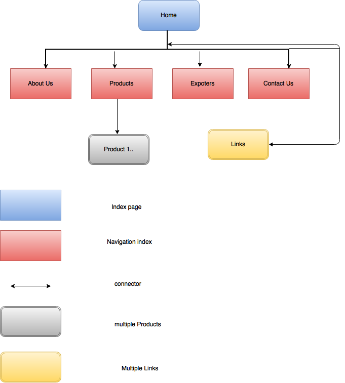

Project Plan
Goals
- The goals and objectives are to endorse AFC as a supplier of quality of fruits, and ensure to satisfy the customers’ requirements of quality assured products and services.
- Australian Fruit Company (AFC) is a Business to Consumer wholesale fruit company who give options to large clients to choose best fruit exporters.
- This site is made for both consumers and business.Consumer looking to prepare their meal for instance fruit salad and for large factories to prepare products from fruit, fruit juice as an example.
Success Evaluation
- Metrics: The Page View metrics will track how many people have visited the website.
- Google Analytics: It is a freemium web analytics service offered by Google, which tracks and reports website traffic.
- SEO: SEO stand for Search Engine Optimization. It is the process of getting
Free or natural search results on search engines. In many respects it's simply quality control for websites.
Target Audience
- Primary customers of the website are dealers of the Fruit shops and big companies, who can search for the best exporters of fruits.
- This site is best suitable for best fruit seekers.
- Organic fruit shoppers: AFC also offers to those customers who lead natural lifestyles to have the selection of fruits.
Flow chart
